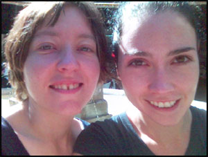
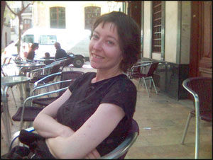

1000 DAYS OF THEORY
Infomobility and Technics: some travel notes
Belinda Barnet
Introduction
The technical artefacts that surround us are more than just extensions of ourselves; they shape and mediate our experience of life and the taking
place of space and time. Each technology has its own material genealogy that exceeds human evolution, and some developments have had more impact on
human life than others. For French philosopher Bernard Stiegler, one of the most important developments in recent times is the convergence between the
industrial technical system, globalisation, and mnemotechnical systems like writing and photography, to form a global mnemotechnical system.
This system incorporates digital information networks like the internet as well as the real-time information events of individuals. The human of the
information age is dependent on this global digital retention system; they invent themselves within it. More recently, with the development of
geosynchronous satellite applications like GPS, there has been an "interweaving" of this global system with real space; the human experience of
countries and regions is shaped in advance by its representations. The global mnemotechnical system reterritorialises real space.
What is currently being deployed is an electronic reproducibility of places, countries and geographical regions. It is not yet very
advanced, but it already opens up immense perspectives.[1]
The following essay is a collection of three vignettes reflecting on infomobility and mnemotechnics from my travels earlier this year. In the first
vignette, I argue that this interweaving of the global mnemotechnical system and real space reaches its zenith with mobile devices; particularly
through the use of wireless information services (like WAP or NTT DoCoMo's i-mode) combined with location-based services that tailor data to
geographical locations. The individual's current location becomes a plane of technological inscription for this global mnemotechnical system,
and the individual human becomes a series of location zones, an evolving piece of data whose information events are fed back into this digital
retention system. All countries and territories with mobile coverage have a layer of virtual graffiti [2]
associated with them, from simple maps and web references to custom-built and location-specific mobile sites that can be accessed with your thumb. My
beliefs are shaped in advance by this digital retention system whose access point I carry with me. In the second vignette I argue that this global
digital retention system also bears witness to an event having taking place; until an event has been captured, shared and distributed across
the network via mobile phone, it has not taken place.
When human beings are separated from the devices that grant them access to the global mnemotechnical system, from both the archive of their own
lives and the collective record, they experience anxiety. Our relationship with mobile devices constitutes a tension, a tension I explore in the final
vignette.
The (re)production of territories -- Marrakech, Morocco 5/05/05
What is really at stake are the radically new possibilities of projection that are offered by digital devices of tertiary retention. If
what we are dealing with is nothing else but real space, it must be an extension of the device by which the world projects as double.[3]
The places I visit become "smart" by virtue of my presence. I bring information with me to this place, and this information mediates my
experience; the territory surrounding me serves as surface of projection for data. I am sitting inside the mud-brick ramparts of Djemaa el-Fna
square in Marrakech, surrounded by a jumble of storytellers, jugglers and snake charmers. In the stall beside me, a woman pulls a raw sheep's head
from her bag, skewers it through the eye socket and rolls it across the grill. The intermittent song of the Muezzin (Arabic call to prayer) sounds
strange to me, and the air is filled with a mixture of French and Arabic, neither of which I can understand. I have no guide book, and I cannot find
my way out of the labyrinthine medina. Yet I am not lost; using GPRS roaming, my device brings access to directions through the cobbled streets and
alleys, to an explanation of the song in my own language.
Every street and building has a layer of virtual graffiti I can summon in an instant; my experiences will in turn be archived and will form part of
this collective inscription. Although I cannot see these records on the walls and artefacts around me, they are not immaterial; they "cannot be
accessed except via the mediating processes of the devices that represent this information" to an otherwise unequipped consciousness.[4] Using my device, I retrieve 243 entries for Café Toubkal on the East side of the square; if I
squint my eyes I can see it through the jumble of stalls. As I make my way across the market I capture images of my approach, I rehearse my own
inscriptions in this collection; my experience has been formulated in advance of my arrival. In this sense, the place I am approaching is already the
future anterior, it is already memory. A mobile device promises not simply, or not only, perpetual connectivity; it promises access to this
sedimentary layer of information that has built up around the globe, and the ability to add your fragments to it. This exceeds the knowledge of human
individuals, it exceeds the territory it covers.
With every step, I emit a smog of data; my journey is being archived too. Every few seconds, my device "pings" the network and receives a response;
my location zone is then recorded in a log. I am conscious that I leave a trail of digital breadcrumbs for Maroc Telecom through the ancient city,
that my position could be triangulated within metres based on my distance from nearby cell stations. I have become data "travelling through data
landscapes" [5]; I have become a roaming subscription number. As my feet slide upon thousand-year old
stone, I am at once travelling through networks and central servers back in Australia, my details handed on via invisible network handshakes across
the globe, my trajectory recorded. I am not lost, I am identifiable; I am a string of information events.
As I travel through the city I leave other traces too, traces which will be incorporated into the global digital retention system. Every ATM I
visit and every credit card transaction I make will be recorded. But my mobile device is a nomadic object; it literally locates me within an
electronic reproduction of the territory I walk over.[6] The network coverage area is known as a
"footprint", and like any inscription on real space it has finite physical limits and dimensions; my trail through it will be marked as one marks the
surface of page. At the same time, this data trail I am creating is already memory; by the time the network locates me, I have gone.
On the opposite side of the round world you are asleep now, and your device will vibrate silently with the video I have sent.
The (re)production of events -- Valencia, Spain 14/05/05
The ultimate affirmation of an event having occurred is its being captured, shared and distributed by mobile phone.[7]
Samsung's current Show Your World ad campaign urges camera phone users to record the minutiae of their daily lives and turn it into a movie.
In Samsung's words, this is "the most vibrant way to capture and share life experiences with family and friends".[8] Human beings have always felt compelled to capture fragments of their lives, to store and transmit memories; we have inscribed
ourselves in books and on cave walls, in folk songs and on New York subway benches, and now on 1.8" mobile phone screens. For Bernard Stiegler, all
technologies are in fact memory aids [9]; but not every technics is also a mnemotechnics. Some
technologies have been created explicitly to store and transmit memories: for example, writing, or photography. Mobile devices were originally created
as walkie-talkies for cars,[10] but the unexpected success of messaging took development in a different
direction; consumers wanted to capture and share ephemera from their daily lives.

All technologies create cultures of use around themselves; they create new techniques and new ways of doing things that were unthinkable prior to
the technology. Mnemotechnics in particular create new ways of remembering; both on a phenomenological level (how we perceive and experience
events in our lives) and a technical level (the material artefacts that serve as surface of inscription). The relationship between these two levels
constitutes a tension -- a tension as old as metaphysics, a tension which is itself productive of new devices and new techniques.[11] The material surface of inscription at once shapes the memory it records; the technical
artefact has limits and resistances which impact the recording.
Mobile devices in turn have material limits that influence the events they capture: for example, a mobile screen is necessarily small (between 1
and 3" for phones, up to 4" for PDAs and Pocket PC), and video is comparatively hard to compress and expensive to receive, even on high-end 3G
devices. Consequently, the videos we create must be short, simple grabs; the actors must be choreographed to address the lens, the message simplified
for its recipient. This means the life events we record are (at least in part) produced by the device, but this is not necessarily a negative
experience. The physical limits and resistances of different technologies can also be creative. For example, the impoverished real estate of the
mobile screen has given us a new language: it cn b hrd to undrstnd if u r not txt msg usr,[12] A mobile
device alters both way we experience events and the event that is recorded.
I have just met up with Jasmine in the Plaza de la Virgen in Valencia. After we have downed some syrupy coffee at a cafe, I ask if I can take a
short clip of her to send to mutual friends in Sydney. There is an eccentric old man sitting at the table next to us eating churros (long sugary
donuts), so I ask Jasmine to talk to this man while I video her on my device. She obliges, and for two minutes, she dunks churros in her chocolate
like a pro and laughs with the old man. The event is performed for the tiny lens. After a time she looks up at me and smiles at our distant
friends - friends whose absence is right now influencing our performance, friends who will receive this "event" at an indeterminate point in the
future, and in that reception affirm that it has taken place (in the manner of an ethical act, our friends will bear witness to this event). Later, as
we walk around the city, we stop at intervals and pose in front of fountains and monuments, snapping still shots to distribute across the globe.

These events do not exist outside the technology for their capture and distribution; they were never simply "there", awaiting the recording.
Each event has been constructed to fit in five second slots on a 1.8 inch screen, for absent third parties who have yet to receive it. After its
performance, the video will be compressed and data selectively lost; it will be cut into packets and transmitted via thousands of parallel digital
streams to be reconstructed on a different device, which will create a composite of frames from multiple streams. The reconstruction will take place
far from this place and this time, and each device will render it differently. A mobile does not simply "capture" events from our lives; it mediates
and constructs the very nature of the events recorded. It is first and foremost a production device, a device for the production and distribution of
memories.
Jasmine and I are both aware that these events are being recorded, and that they will be distributed to people on the opposite side of the round
world (people who are right now sleeping, unaware of the sights and sounds and colours that seem most live to us here now). This unfolding moment,
which took place only once and which feels so authentic, will be infinitely reproducible in our absence.[13] Perhaps more importantly, we are aware of this future; aware of this anticipated Other who will replay the event on a
different device and in a different context. The possibility that these events can be captured and distributed in this way fundamentally alters
our perception and our experience in advance. A mobile is always and also a token of the future, a future where fragments of your life will not be
lost, but will survive "in an array of splendid colour".[14]
You will receive my stories and will forget them. I am a name in your contact list, I am a collection of photographs.
The Promise -- London, England 30/05/05
I know I spend too much time texting friends, but I can't stop myself...I even sleep with my mobile under my pillow. I just have to wake
up and read messages when I receive them.[15]
A mobile device is a promise: the constant potential for communication, even if this communication never arrives. My device is always on,
always connected, there is always the possibility that a message may have arrived since last I checked (or not). I worry that I may miss something or
that someone may miss me, and this possibility haunts me. I feel compelled to check the device several times an hour, like someone obsessively washing
their hands. I am sensitive to its vibrations through several layers of coat pockets, and scramble madly for it when I feel the slightest movement.
Every so often I put my hand in my pocket just to check it is still there. My perception is altered in advance by its comforting presence; was that my
ringtone I just heard, was that my message alert? Sometimes I have minor hallucinations; when I hear a mobile ring nearby I glance instinctively at my
screen -- was that for me? ("one must expect it, I am expecting it, we are expecting it" [16]). My
device demands what Linda Stone calls "continuous partial attention" -- even when nothing is happening. The mobile user has a constant low-level
awareness of their device; the possibility that communication may arrive at any instant inhabits their awareness.
With continuous partial attention, we're constantly scanning incoming alerts for the one best thing to seize upon: "how can I tune in in a
way that helps me sync up with the most interesting, the most important opportunity?"[17]
The arrival of this most important opportunity, the alert that can happen at any instant, is perpetually immanent. Even when the device
rests peacefully in my pocket and my hands are folded in my lap, communication from my contacts still exists in potentia; I am simply awaiting
their arrival. It is the fact that this opportunity may never arrive, that although I have a contact book filled with names I may yet be forgotten, it
is in the "always-open hollow of possibility, that is, in non-coming, absolute disappointment [deconvenue]", that I have a relation to the
event.[18] The possibility that this most important opportunity may never arrive is the condition
of its arrival. If a day passes without contact I begin to panic; have I been forgotten? Everyone around me in the street seems to be receiving calls;
am I not important? "Seeing...everyone talk on the phone, one realises that there is a mobile community and one is not part of it".[19] The mobile implies perpetual availability for contact, but contact may always not take place, too. The
spectre of loss -- of being forgotten, or of missing the arrival -- marks our relationship with mobile devices.
If I don't receive a text when I wake up or I receive only a few messages during the day, I feel as though nobody loves me enough to
remember me.[20]
A mobile device promises the future -- a future where important messages may yet arrive, and where we will not miss the arrival. Like any promise,
there is an expectation that this will take place, and an attendant anxiety that it will not take place. This has led to a new set of social
behaviours around mobile messaging. When the recipient of a message is unable to respond straight away, there is a sense that a promise has been
broken. "A message should be responded to within about 30 minutes unless one [has] a legitimate reason, such as being asleep".[21] Japanese students surveyed by Mizuko Ito and Daisuke Okabe actually apologised to the recipient if
their responses were delayed by more than an hour, and often just "checked in" with their friends during the day to let them know they were still
thinking of them.[22] Students who were about to turn their phone off or would be unable to receive
messages for a while sent a warning to their friends; "just got home, think I'll take a bath".[23]
Mobile owners live in a constant state of anticipation.
A mobile device is a promise; this promise inhabits our awareness, like a peripheral anxiety. It is constantly in the background, and it shapes our
experience of life and the "taking place" of events within our lives. A mobile promises the instrumental possibility of reproduction, of
capturing and distributing the minutiae of our daily lives, even if these experiences can never be faithfully recorded. It promises that we will not
be forgotten, that we will not be lost; the territory has been reproduced in advance of our arrival, and we will always be identifiable. It promises
the constant potential for communication, even if this communication never arrives.
What if I miss something, or someone misses me?
Awaiting (at) the arrival -- Dubai international airport 03/06/05
You have not replied to the stories I have sent; have you forgotten me? Perhaps your device is broken and my messages have been lost; perhaps you
have sent a reply and it has not yet reached me. Either way, the absence saddens me.
If only this were the final day of waiting.
Acknowledgements
------------------------------
With thanks to Darren Tofts, Mark Finn and Andres Vaccari for their comments on this article.
Notes
---------------
[1] Stiegler, Bernard. "Our Ailing Educational Institutions" in Culture Machine 5
http://culturemachine.tees.ac.uk/Cmach/Backissues/j005/Articles/Stiegler.htm.
[2] The term "virtual graffiti" was first used by Howard Rheingold in Smart Mobs:. The Next Social
Revolution. Perseus Publishing 2002. For the purposes of this article I am using the term to include both i-mode (cHTML) and WAP sites: these are
different services. Not all GPRS/3G handsets can access the i-mode service, users need an i-mode client.
[3] Stiegler, ibid., 2000.
[4] Stiegler, ibid., 2000.
[5] Stiegler, ibid., 2000.
[6] Mobile coverage is achieved by partitioning the area into a plurality of location zones, each zone
being served by a base station.
[7] Satchell, cited in Goggin, Gerard 2005. "Calling the Shots" in The Age July 2 2005.
http://www.theage.com.au/news/icon/calling-the-shots/2005/06/30/1119724747968.html?oneclick=true
[8] Trendwatch.
[9] Steigler, ibid., 2000. Also see Steigler, Bernard. Technics and Time, 1. Trans. Richard
Beardsworth and George Collins. Stanford: Stanford University Press 1998. ch:1.
[10] Agar, Jon. Constant Touch: A Global History of the Mobile Phone. Cambridge: Icon. 2003.
pp. 35.
[11] For more detail please see my CTHEORY article, "Technical Machines and Evolution", or the first
two chapters of Stiegler 1998, ibid.
[12] It can be hard to understand if you are not a text message user. It might also be argued that
the expense of voice carriage has contributed to the creation of a new messaging language.
[13] Derrida, Jacques and Bernard Stiegler 2002. Echographies of Television: Filmed
Interviews. Cambridge, UK: Polity Press 2002. pp. 38.
[14] Advertisment for Samsung E400
http://www.samsung.com/uk/products/mobilephones/mobilephones/sgh_e400saxeu.asp
[15] 14-year old mobile user, cited in Lee, Alfred. "Youths Seek Help for SMS Addiction" in IT
AsiaOne October 6 2003 http://it.asia1.com.sg/newsdaily/news001_20031006.html
[16] Derrida, Jacques. Aporias. Stanford (CA): Stanford University Press 1993.
[17] Stone,cited in Maxwell, Jill. "Stop the Net, I Want to Get Off" in Inc. Magazine 2002
http://www.inc.com/magazine/20020101/23805.html.
[18] Derrida and Stiegler 2002, ibid. pp 14.
[19] Puro, Jukka Pekka. "Finland: a Mobile Culture" in Katz and Aakhus (eds.) Perpetual Contact:
Mobile Communication, Private Talk, Public Performance, Cambridge (MA), Cambridge University Press 2002. pp 28.
[20] Mobile user, cited in Rheingold 2002 ibid., pp 21.
[21] Ito, Mizuko and Daisuke Okabe. "Technosocial Situations: Emergent Structuring of Mobile E-mail
Use" in Ito, Okabe and Matsuda (eds.) Personal, Portable, Pedestrian: Mobile Phones in Japanese Life, Cambridge (MA), MIT Press, 2002. pp. 265.
[22] Ito and Okabe 2005, ibid., 265.
[23] Ito and Okabe 2005, ibid., 266.
--------------------
Belinda Barnet is Lecturer in Media at Swinburne University of Technology, Melbourne. She has also worked as Service Delivery
Manager (Wireless Content Services) for Ericsson Australia, and has research interests in technical evolution and the philosophy of technology.
Belinda has a PhD in Media and Communications from the University of New South Wales.